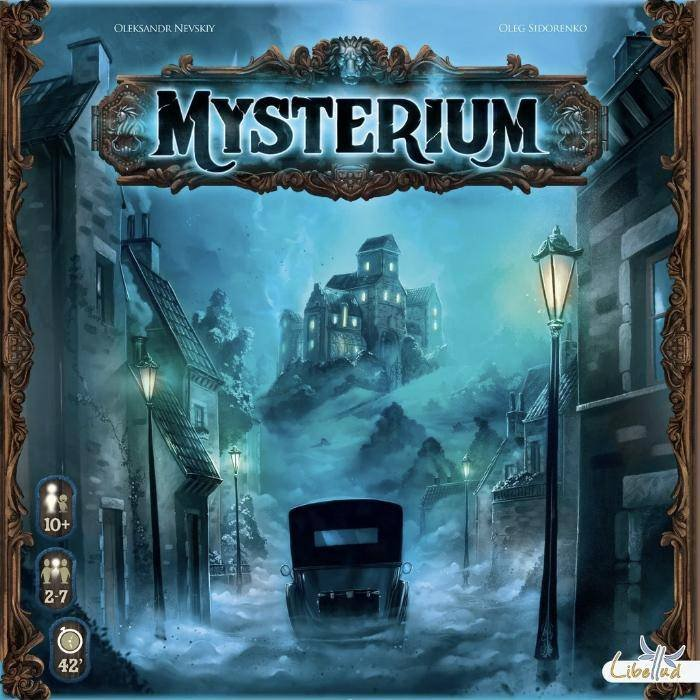
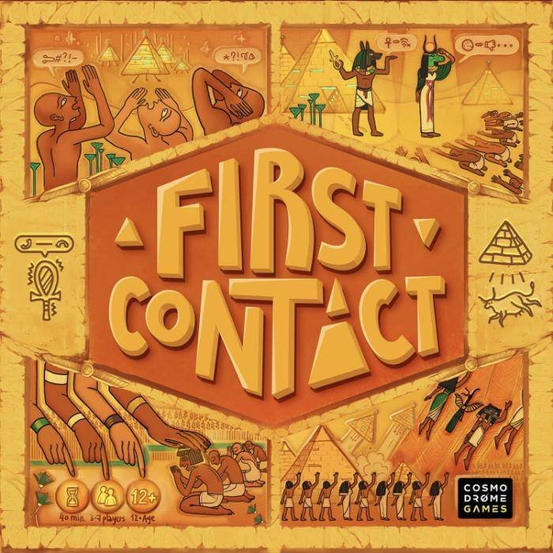

Entheo Temple Game Events
As discussed in person recently, this is a proposal to our ministers for a new recurring event for Entheo Temple.
Three potential events are detailed below, presented like other events on Heylo. They use games the Catterwauls already own as a launchpad for exploring different forms of limited communication. Over time, we'd tune the game selection to suit attending members' interests, as we get to know each other better.
Schedule
Jessy's current work contract ends December 1, so we can't commit to an exact schedule until we know what our next round of employment looks like.
For now, we're thinking that alternating monthly between a weeknight and a weekend day would work for the most people. We'll let you know once we're sure that works for us, too.
Player Count
Our space comfortably fits somewhere between 10 and 20 people, and we're open to whatever number in that range you feel is right. Aiming high is fine, since turnout for free meetups usually runs lower than RSVPs, in our experience. 😸
A few of our games support that many players. For the rest, we'll split into multiple groups as needed.
Naming, and Future Possibilities
Below, we've used the format "Games: Theme." We're not sure whether something more specific than "Games" is needed.
"Tabletop Games" describes the current focus, as they are a great modern way to bring people together in one place for a variety of gaming, at a low price, especially with a library like ours! 😬
But we'd rather not be that restrictive if we can avoid it. We're "omnigamers": we'll play a game in any format if we feel we can learn something from it.
For example, we ran a meetup in Virginia built around creating digital versions of board games, that we could all play in the same room. Given enough interest, we'd love to develop our own similar digital game, tailored to the group.
Escape room culture also has a lot of crossover with Entheo Temple-goers. (We've played over 260 escape rooms, many of them on enthusiast tours.) Unfortunately, Atlanta is a desert for escape room quality, but if it ever made sense, we could help facilitate a small tour, probably as part of a larger event. The obvious trial run would be Greenville, SC: it features the closest venue with world-class games, and it's on the way to a lot of beautiful wilderness.
Next Steps
We'll get back to you once we know what post-November looks like for us. In the meantime, please let us know if we're on the right track with the potential events below.
They're still missing details that real Heylo posts would need (e.g., who can attend, event flow, and food logistics), and we can help fill those in with your guidance later. We're also happy to go through any training needed to make sure we uphold the community's values, as described in the covenant.
Note: Each listing below uses box art from one of the event's games as its image. If you'd prefer one image we use for every meetup, Catie would love to create it.
Another Note: We have an Acworth address, but we're not within the city limits. "Acworth/Kennesaw" seemed like the best descriptor to us, since we're close to where those two meet, in the direction of Woodstock.

Games: Communication With Imagery (Acworth/Kennesaw)
About
This is a monthly gathering for anyone who might enjoy connecting with other members via gameplay experiences.
THIS MONTH'S THEME:
Exploring the diversity in the ways each of our minds imparts meaning to images.
Most people have the freedom to channel their thoughts using the creative possibilities of their bodies: through speech, movement, or enduring works of art. We will explore complete restrictions of these freedoms, with gameplay structured around communicating ideas using pre-existing surreal artwork.
GAMES ON THE TABLE:
We'll play at least some of what is listed here. They're all quick to learn, and we'll teach you! No experience is necessary. Feel free to watch the overviews linked below though, if you'd like to preview.
All of these are either fully cooperative, or team-based, depending on how many people are playing.
👻
Mysterium
🎡
Mysterium Park
📖
Obscurio
🕵️
Shadows: Amsterdam
We are open to suggestions! We have an extensive library available, but will want at least a week to catch up on the rules before teaching the group. Let's discuss in
Chat if you know of other good thematic matches for this event.

Games: Alien Languages (Acworth/Kennesaw)
About
This is a monthly gathering for anyone who might enjoy connecting with other members via gameplay experiences.
THIS MONTH'S THEME:
Overcoming language barriers, by intentionally building shared understanding.
The games we'll be playing take different approaches to this, each using two groups. In one group, we remain as ourselves: humans who speak English. In the other, we roleplay as members of fictional ancient civilizations, or extraterrestrials.
Some of our exploration will involve "Receptive Multilingualism", where people understand each others' languages, but only speak in their native tongue.
GAMES ON THE TABLE:
We'll play at least some of what is listed here. They're all quick to learn, and we'll teach you! No experience is necessary. Feel free to watch the overviews linked below though, if you'd like to preview.
📜
Rosetta: The Lost Language
👽
First Contact
✨
A Message from the Stars
We are open to suggestions! We have an extensive library available, but will want at least a week to catch up on the rules before teaching the group. Let's discuss in
Chat if you know of other good thematic matches for this event.